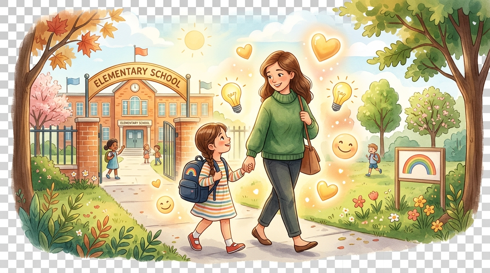

邀請您走進校園裡
與孩子們一起學EQ
每學期僅需 8 小時
喚醒孩子的情緒力

很多人以為 EQ 是教孩子「不要生氣」，其實 EQ 是教孩子「看懂自己的情緒，並找到正確的表達方式」。
當孩子被誤解時，表面是「生氣甩門」，底層其實是「委屈」。透過覺察，孩子能學會「理性的說明」取代洩恨，這一個小小的覺察將改變孩子一生！
面對日常溝通斷點、手機 3C 依賴、拖拖拉拉、專注力不足，以及校園中「開玩笑、惡作劇與霸凌」的界線混淆。
EQ 課程運用孩子聽得懂的語言與戲劇活動，教孩子學會精準分辨人際分際，避免過度防衛或盲目隱忍，打造安全防護網！
完全不用擔心負擔過重！線上影音課程 24 小時隨點隨看（開放長達 2 個月，在家就能學）。
實體入班每學期僅需 3~4 次（每次約 2 小時，共計約 8 小時），就能輕鬆完成輔班任務，陪伴孩子在校園成長！
當孩子因為誤解而被責備時，第一反應常是頂嘴、甩門或怒罵。很多家長會誤以為孩子在挑釁，其實背後是委屈與無助。
數位時代孩子面對高刺激螢幕，常因時間感模糊與自制力未成熟而引發家庭風暴。
低年級孩子大腦發育仍在進行中，傳統單向說教容易讓孩子失去耐心與專注力。
過度防衛會失去朋友，一味隱忍又容易陷入危險。唯有掌握清晰界線，孩子才能真正保護自己並尊重他人。
線上影音 24 小時隨選隨看
開放長達 2 個月，在家零壓力自主完成
4 次線上共學
（上午 9:00~12:00）
駐校督導親自演練，疑難即時解答
每學期僅 3~4 次（下午 13:30~15:00）
陪伴同學，近距離感受孩子轉變
經過第一年輔班累積與督導協助備課
第二年即可登台，一圓你的老師夢
設計保證金機制的初衷，是激勵每位家長堅持完成溫暖旅程，為自己與孩子收穫滿滿 EQ 素養！
24 小時隨選隨看，零壓力在家自主完成學習
駐校關懷督導親自線上演練教學情境與技巧
入班觀看主講如何引導孩子，陪伴學童歡笑成長
各位家長並不缺少愛，而是缺少一個「懂孩子」的方法。
加入樂利 EQ 志工團隊，讓我們成為孩子最有力的靠山！